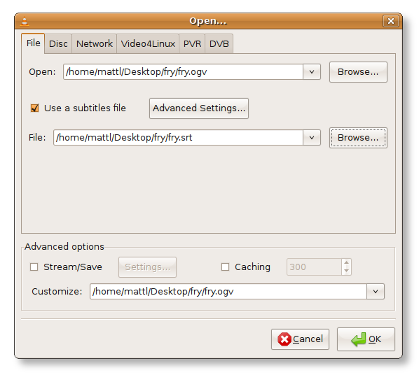
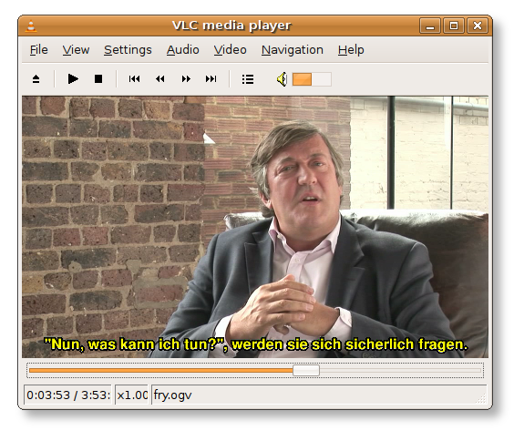

Me afrimin e Ditës së Lirisë së Software-it, kemi hartuar këtë përkujdesore të vockël se si të luhet filmi, Gëzuar Ditëlindjen GNU (me Z. Stephen Fry), me titra në gjuhën tuaj.
Është shumë e thjeshtë, pra le t'ia fillojmë! Kjo përkujdesore supozon që përdorni VLC-në, nëse përdorni Totem, Xine, Mplayer ose Kaffeine, kemi ndihmë edhe për rastin tuaj.
Krejt këto udhëzime janë vetëm për sisteme GNU/Linux, ndaj, nëse përdorni Windows ose Mac OS X, mundet që vlejnë edhe për rastin tuaj, por nuk kemi nga ta dimë.
Pasi të keni shkarkuar të dyja kartelat, sigurohuni që i keni brenda të njëjtës dosje, dhe që emrat e kartelave përputhen me njëri-tjetrin.
Për shembull, videoja mund të riemërtohet fry.ogv dhe nëntitulli fry.srt.
Tani thjesht hapeni videon nga VLC. Nëse e bëni nga një terminal, do të duhej të shihnin titrat në punë. Nga GUI… klikoni, Kartelë, Hap Kartelë…

Klikoni Ok, dhe videoja do të fillojë…
